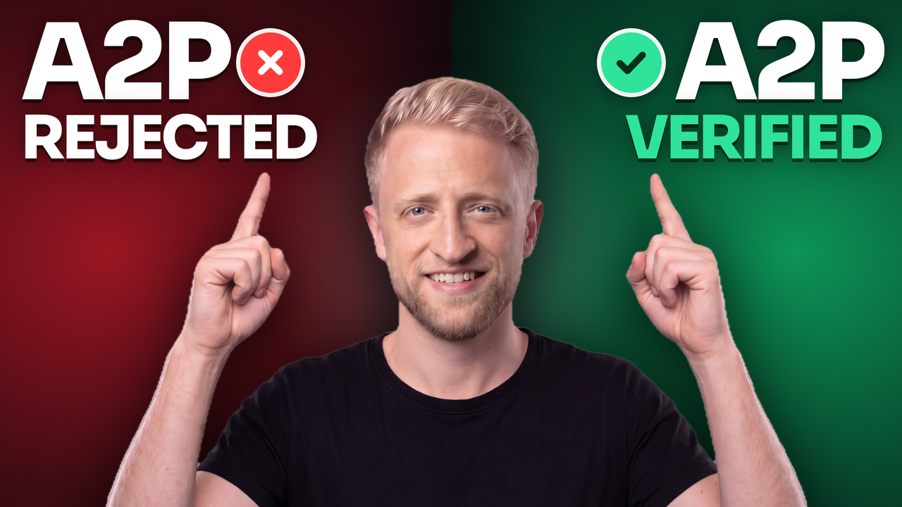
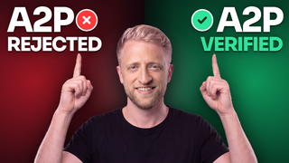
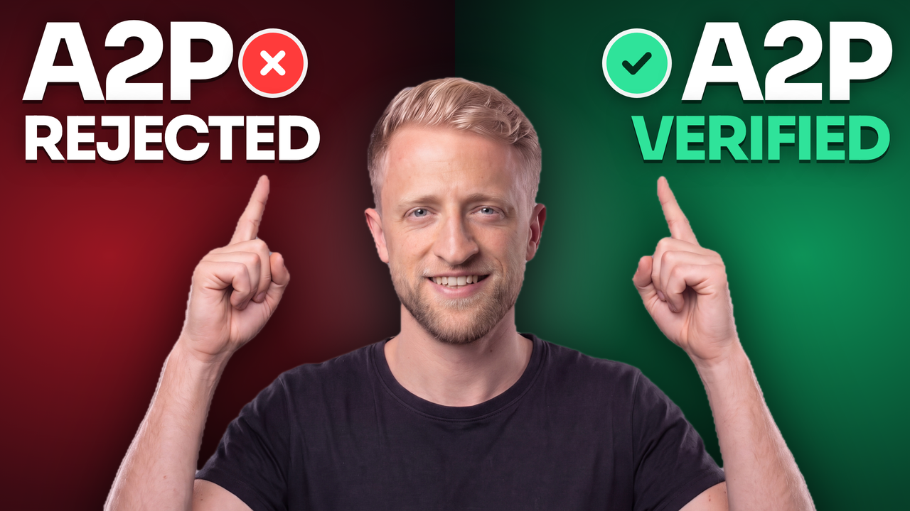
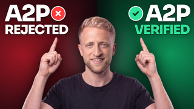
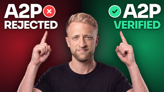

Your thumbnail: the face, on the pointing you approved
Wed Nov 25. Nothing you approved was touched this time: same layout, same words, same pointing as the version you picked. Only the face changed, plus a clean black shirt. The face is built on the one you called most real (your real frame, professional light). 1 adds a gentle smile with teeth, 2 is the same with the fingers a little more straight up as you asked, 3 is a second take of the mouth, 4 keeps your real closed smile. Pick one number.
My pick1. Smile with teeth, the pointing you approved

search size and sidebar size
A2P REJECTED VERIFIED
Download thumbnail 12. Same face, fingers a little more straight up

search size and sidebar sizeA2P REJECTED VERIFIED
Download thumbnail 23. Smile with teeth, second take of the mouth


search size and sidebar sizeA2P REJECTED VERIFIED
Download thumbnail 34. Closed smile (the face you called most real), the pointing you approved

search size and sidebar sizeA2P REJECTED VERIFIED
Download thumbnail 4